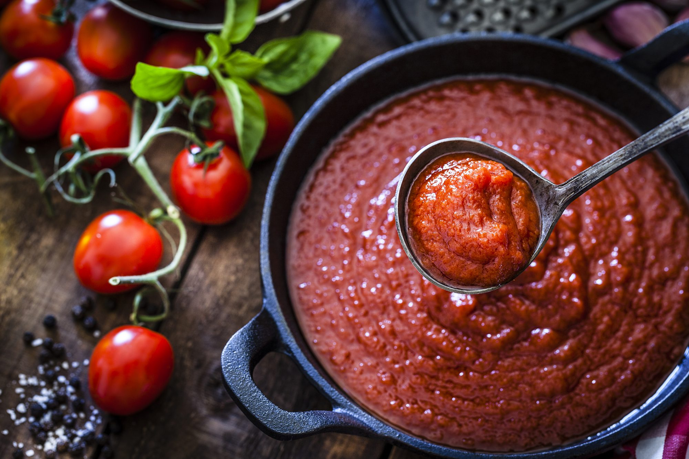

Basic Tomato Sauce

Description
This is a simple basic recipe for a tomato-sauce. Mostly used for pasta, you can also use it as a dip or anything you like.
Ingredients
- 1 onion
- 4 cloves of garlic
- 1 tbsp tomato paste
- 2 tbsp olive oil
- 3 cans tomato
- 1 tsp maple syrup (alternatively sugar)
- Salt
- Pepper
- 1 tsp Paprika Powder
Steps
- Chop onion and garlic
- heat oil in a pot
- add chopped onion and garlic and cook for about 2-3 minutes
- add tomato paste and cook for another 2-3 minutes (onions shouldn't brown too much. If in doubt reduce heat)
- add tomatoes
- add all the spices, salt and pepper to taste
- when it starts boiling reduce heat to a minimum
- put a lid on the pot and let it boil for 15-20 minutes (the longer the better)
- if you don't like chunks you can blend the sauce